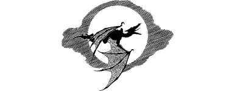

154
For hours the sound of the Kraan’s incessant cry echoes among the surrounding hills, making it difficult for you to sleep at all this night. As you lie awake listening to its ghastly caw, a sense of foreboding invades your mind and, despite your strong will, you feel powerless to overcome it. Restless and agitated, you get up and pace around the cellar until, at last, the cawing ceases and a chorus of bird song ushers in the dawn (lose 3 ENDURANCE points because of lack of rest).
{kind=link}

You join the troop for breakfast with Rasbarin and his brothers. During this meal, the elderly monk offers you a Flask of Aquas to fortify you on the road ahead, and a Talisman of Ishir to ward off hostile creatures (these are both Backpack Items). After breakfast, Nathor thanks Rasbarin for his hospitality and makes a donation of 50 Lune to his monastery. (If, before leaving, you too would like to make a donation, erase from your Action Chart the number of Gold Crowns you decide to give to the holy Vaderish Brethren.)
To continue, turn to 16.